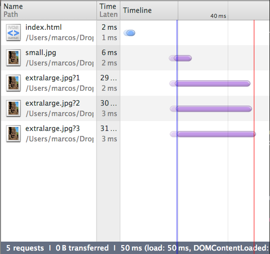

Responsive Images:
ain't we there yet?
Are we there yet?
no... but close...
eeer.
Who cares?
We do!

responsiveimages.org
Why do we care?
Images - over 60% of a page
The RWD conspiracy?
72% same resources
First world problems...
What are
responsive images?
Images (co)respond to the environment.
Use Cases
Stretchy images
Fitting different viewports
Device Pixel Ratio
Device pixel ratio is the ratio between CSS pixels and physical pixels.
Viewport matching
Matching to portrait
Switching to landscape
Art direction - crop
Art direction - swap
Other use cases
- File format support - Webp, Anyone?
- Print and e-ink
The developer's glass ceiling
- Reliance on divs.
- Bypass preload scanner.
- Reliance on server-side technologies.
Quick example: picturefill
microsoft.com

microsoft.com
<div data-picture data-alt="Microsoft">
<div data-src="logo-type-1x.png"></div>
<div data-src="logo-type-2x.png"
data-media="(min-device-pixel-ratio: 2.0)">
</div>
<noscript>
<img src="logo-type-1x.png" alt="Microsoft" />
</noscript>
</div>
Pre-fetching
Without script
Hacking around problem
<script type="text/javascript">
window.picturePolyfill.resolveLast();
</script>
Final code
<div data-picture data-alt="Microsoft" class="mscom-logo">
<div data-src="logo-lg-1x.png"></div>
<div data-src="logo-lg-2x.png" data-media="(min-device-pixel-ratio: 2.0)"></div>
<div data-src="logo-sm-1x.png"
data-media="(max-width: 539px)"></div>
<div data-src="logo-sm-2x.png"
data-media="(max-width: 539px) and (min-device-pixel-ratio: 2.0)"></div>
<noscript><img src="logo-lg-1x.png" alt="Microsoft" /></noscript>
</div>
<script>window.picturePolyfill.resolveLast();</script>
What's a developer to do?
Proposed solutions
The <picture> Element
The good
- Covers the use cases.
- Dev's "get it"
The bad
- Multiple elements.
- Extends source element (or special cases it)
- Mixes media queries in the markup.
The ugly
Picture 95
<picture>
<!-- This source element covers the range 320-400, so the midpoint is 360, and that's what I'm using to calculate the x values, e.g. 320/360=0.89; similarly below -->
<source media="(max-width: 400px)" srcset="160.jpg 0.44x, 320.jpg 0.89x, 480.jpg 1.33x, 640.jpg 1.78x, 960.jpg 2.67x">
<source media="(max-width: 520px)" srcset="160.jpg 0.35x, 320.jpg 0.7x, 480.jpg 1.04x, 640.jpg 1.39x, 960.jpg 2.09x, 1280.jpg 2.78x">
<source media="(max-width: 639px)" srcset="320.jpg 0.55x, 480.jpg 0.83x, 640.jpg 1.1x, 960.jpg 1.66x, 1280 2.2x, 1920 3.31x">
<!-- Note that in the next 2 source elements, images are only half the viewport width -->
<source media="(max-width: 800px)" srcset="160.jpg 0.44x, 320.jpg 0.89x, 480.jpg 1.33x, 640.jpg 1.78x, 960.jpg 2.67x">
<source media="(max-width: 959px)" srcset="160.jpg 0.36x, 320.jpg 0.73x, 480.jpg 1.09x, 640.jpg 1.45x, 960.jpg 2.18x, 1280.jpg 2.91x">
<!-- And in the next 4, images are only 1/3 of the viewport width -->
<source media="(max-width: 1200px)" srcset="160.jpg 0.44x, 320.jpg 0.89x, 480.jpg 1.33x, 640.jpg 1.78x, 960.jpg 2.67x">
<source media="(max-width: 1440px)" srcset="160.jpg 0.36x, 320.jpg 0.73x, 480.jpg 1.09x, 640.jpg 1.45x, 960.jpg 2.18x, 1280.jpg 2.91x">
<source media="(max-width: 1920px)" srcset="320.jpg 0.57x, 480.jpg 0.86x, 640.jpg 1.14x, 960.jpg 1.71x, 1280 2.29x, 1920 3.43x">
<!-- This covers the range 1920-2560, but I left off the upper bound so any truly huge monitors get sensible behaviour -->
<source srcset="320.jpg 0.43x, 480.jpg 0.64x, 640.jpg 0.86x, 960.jpg 1.29x, 1280 1.71x, 1920 2.57x">
</picture>
Press ctr+alt+del to reset standardization.
The srcset attribute
Example
<img alt="The Breakfast Combo"
src="banner"
srcset="banner-HD 2x,
banner-phone 100w,
banner-phone-HD 100w 2x">The good
- Incremental improvement.
- Reuses existing element.
- Browser makers like it.
- Already in Webkit.
- Automatically resizes images to DPR.
The bad
- No art direction.
- No media type selection.
The ugly
- Syntax is confusing.
- Syntax is does "w" mean?
- Algorithm is counter intuitive.
- Users have browsers zoomed in.
What if I told you...
You don't need a microsyntax.
<img src="some/image">
Client hints
The good
- No need to change markup
- opt-in mechanism.
3 Questions
- Can you set HTTP headers on your site?
- Do you use GitHub pages or CDN?
- Can you set HTTP headers on your site?
The bad
- Server-side only.
- Content negotiation.
- Not well suited for art direction.
The ugly
- Proxies can strip data.
- Might require SSL to work reliably.
- Relies a lot on
Vary:
So Yeah....
It's all pretty much $#@%!.
<picture alt="..." width="" height="" src="small.jpg">
<source media="(min-width: 600px)"
srcset="medium-1.jpg 1x, medium-2.jpg 2x">
<source media="(min-width: 1000px)"
srcset="large-1.jpg 1x, large-2.jpg 2x">
<img src="small.jpg" alt="why is it so difficult?">
</picture>
BOOM!
Respimg syntax
Simple Example
<img src="pic-small.jpg" alt="..."
src-1="(min-width: 400px) pic-medium.jpg"
src-2="(min-width: 1000px) pic-large.jpg">
Respimg syntax
<src-n-attribute> = <media-query>? [ <x-based-urls> | <viewport-urls> ]
The good
- Addresses picture's problems.
- Solves most use cases.
- Handles multi column layouts.
The bad
- Not easy to polyfill.
- Doesn't solve for media type.
- New scary microsyntax.
- Not very forgiving (maybe good thing?).
- Complicated.
The ugly
- Viewport URLs
<viewport-urls> - simple
<img src-1="
100%;
pic1.png 160, pic2.png 320, pic3.png 640, pic4.png 1280, pic5.png 2560
">
<viewport-urls> - fancy
Viewport URL
100 30em 400 70em 50%;
<img src-1="
100 30em 400 70em 50%;
pic50.png 50, pic100.png 100, pic200.png 200,
pic400.png 400, pic800.png 800, pic1600.png 1600,
pic3200.png 3200">
Soo... um...yeah...
But wait...

If the browser knows everything...
Responsive Image
Container
How does it work?
- Filed-based approach.
- A "layer" per resolution.
- Handles resolution switching and art-direction.

Resolution switching
(8kb)
Delta 1 (+5kb)

Delta 1 - composed

Delta 2 (+8kb)

Delta 2 - composed
Art direction
200x200

400x288
770x512
Composite - 770x512px


The good
- Markup left untouched.
- A single file per image.
- Better for post-download dimensions changes.
The bad
- New file format.
- Requires significant changes in browsers.
- Decoding performance.
- Custom fetching mechanism.
The ugly
- It will need tools.
- Probably require HTTP 2.0.
- Probably an IPR nightmare.
- Needs to be standardized.
What can you do today?
Compress your images (d'uh!)
Lazy?... like me.
Use a CDN or server-side tech.
Use imageOptim.
Compressive images
Secret Recipe
- Take a long hard look at yourself.
- Take full size image.
- Set compression to 0.
- set it in place and let the browser resize it.
- Adjust size - got to step 1.
- Test!!!
Side-by-side

Picturefill
Other solutions
Join the RICG
responsiveimages.org
Sizer Soze
Up to* 72% image data savings. tkadlec.com
x-picture (x-src-n?)
Thanks!
- Thanks to Yoav Weiss for the RIC images + slides.
- Github: marcoscaceres
- twitter: @marcosc
- Image credits..
- Glass ceiling - K Gillett
- Scifi cover, picture taken by erik_mona
- Spray and pray - fallout.wikia.com x